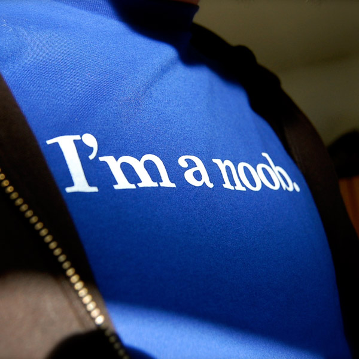

Пролог
29 октября 2018

Привет ! Меня зовут Евгений , мне 33 года и я на данный момент верстальщик. Работаю в веб-студии ( мы называем её бюро разработок). Верстаю сайты-визитки и лендинги.
В разработку пришел чуть больше года назад, и до того момента не понимал в разработке абсолютно ни чего. Мог прошить смартфон,
переустановить винду и там всякие мелочи, но о программирование никогда не задумывался. Как то коллега-кореш сказал :
- Надоело газировку продавать, буду изучать битрикс
- Круто – говорю – А чё эта?
Ну и понеслась, правда стали интересоваться не битрикс , а как нам подсказал разработчик с большим стажем и родственник м
оего кореша, веб-разработкой. Я стал после работы изучать верстку, смотреть видео на ютюбе , основы HTML и CSS, пробовал всё повторять ,
изучал flexbox , и спустя месяц уже думал что то заверстать. Получилось мягко говоря что то совсем не то что я хотел.
Пошел на 4х месячные курсы в LoftSchool.Там нас обучали большому стэку технологий, благодаря им я научился верстать блочной моделью,
познакомился с git, научился собирать проекты с помощью gulp, писать на препроцессорах sass и шаблонзаторе pug. Не легко пришлось в
изучение нативного java sctript, впрочем он мне и не поддался, максимум который я смог осилить это навешивание классов и стилей при каком то событие.
Закончил вроде бы не плохо, этот сайт как раз был выпускным.
С того момента прошел уже год . я набрался немного опыта в верстке и прикручивание всяких плагинов jqery и решил ,
что пора расти дальше, становится программистом. Этот блог я завел для того ,чтобы документировать свой опыт и продвижения
в развитие своей цели. Я решил занятся изучением не только конкретных технологий веб-разработки, но и развивать инженерные
скиллы, навыки проектирования, управление своим рабочим процессом, enterprise, базы данных, ну и конечно же самый первый язык ,
который должен изучить программист , это английский .